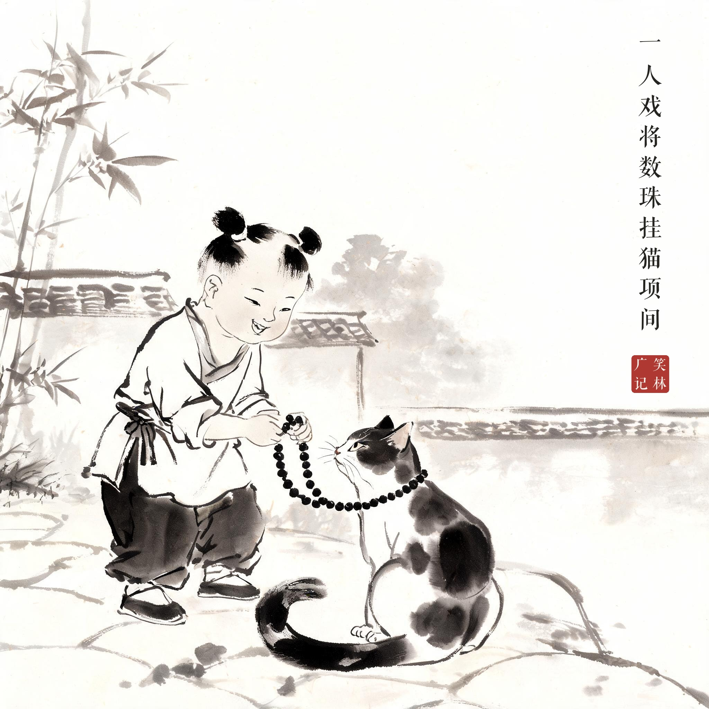
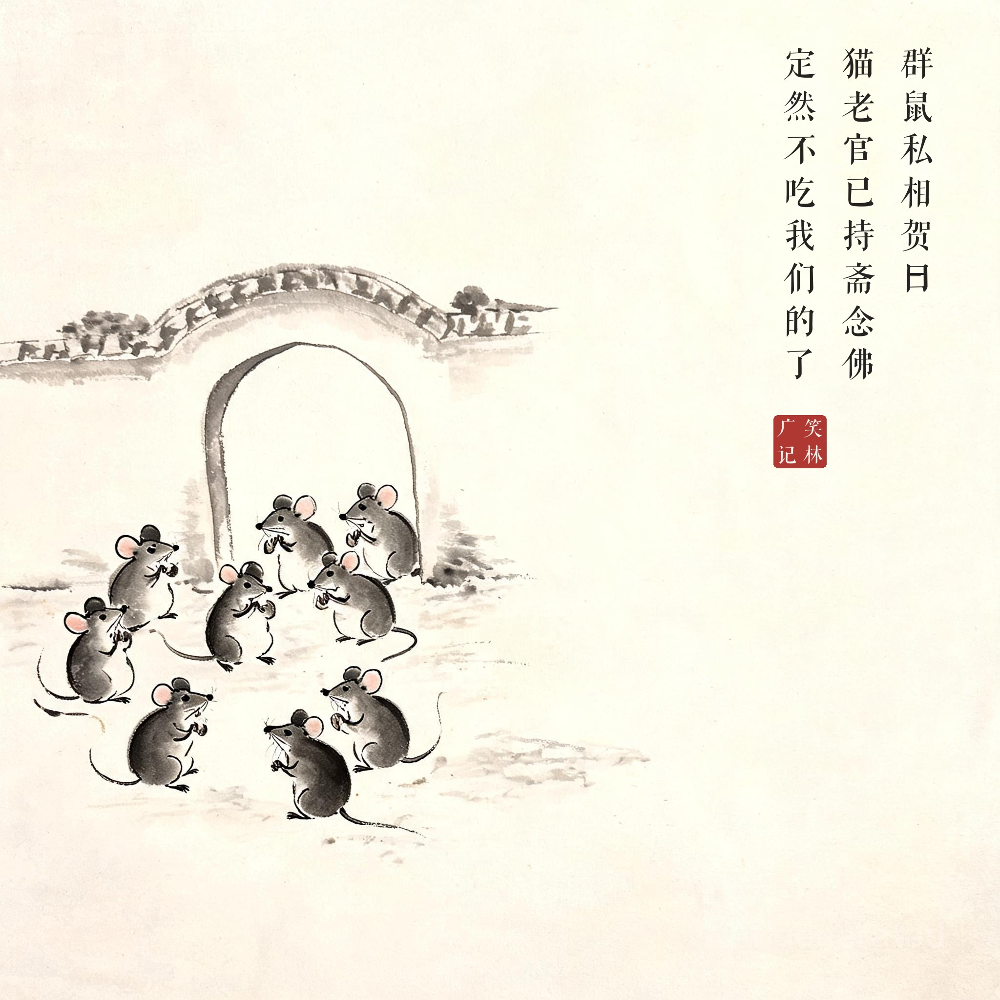
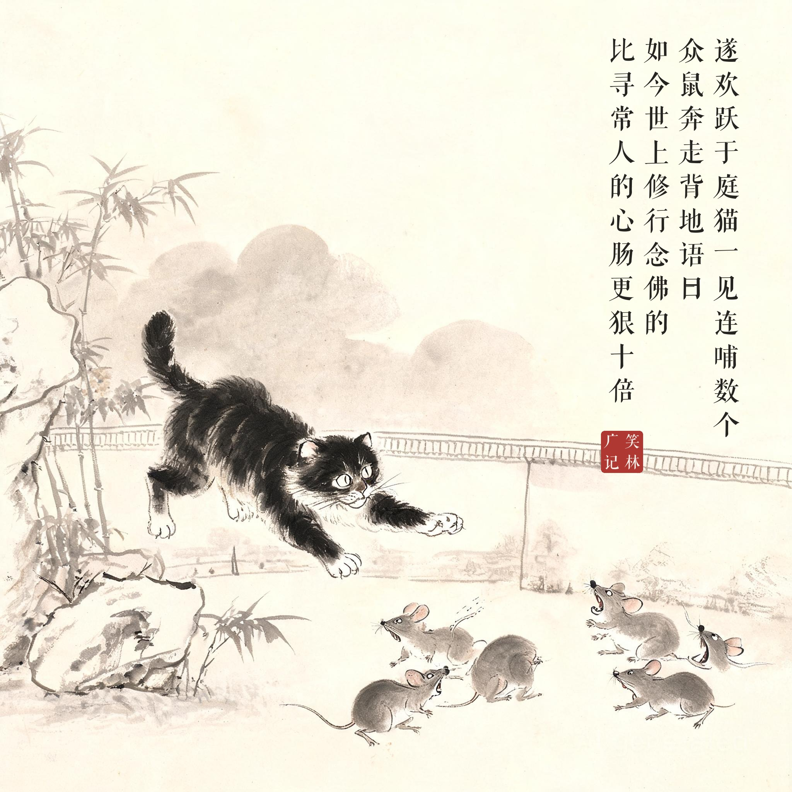

《笑林广记 · 讥刺部》（[清]游戏主人纂集）
一人戏将数珠挂猫项间，群鼠私相贺曰："猫老官已持斋念佛，定然不吃我们的了。"遂欢跃于庭，猫一见，连哺数个。众鼠奔走，背地语曰："吾等以他念佛心慈了，原来是假意修行。"一答曰："你不知，如今世上修行念佛的，比寻常人的心肠更狠十倍。"
有人开玩笑把念珠挂在猫脖子上。老鼠们私下庆贺："猫老爷持斋念佛了，肯定不吃咱们了。"于是满院子欢腾。猫见了，一连扑倒好几个。众鼠奔逃，背后议论："我们以为他念佛心慈，原来是假修行。"一只答："你不懂，如今世上修行念佛的，比常人的心肠狠十倍。"
披袈裟的猫最可怕——老鼠的错误不在轻信，在于把仪式当成了本性。这则寓言几百年来一直是观人的照妖镜。